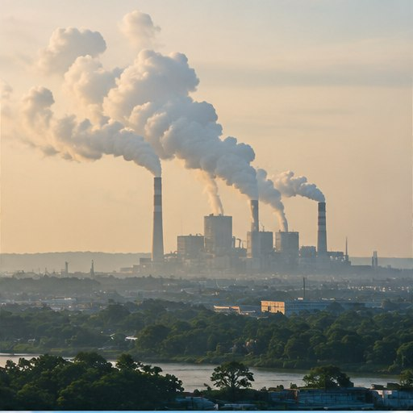

Bahan bakar fosil
Batu bara, minyak bumi, dan gas alam dibakar untuk listrik, industri, serta kendaraan. Pembakaran melepaskan karbon sebagai CO₂. Energi merupakan penyumbang terbesar emisi global dalam banyak inventaris.
02 / MENELUSURI PENYEBAB
Pelajari gas rumah kaca, sumber emisi utama, dan bagaimana kebiasaan sehari-hari terkait dengan jejak karbon.
Jelajahi materi ↘
02 / MENELUSURI PENYEBAB
Aktivitas manusia—energi, transportasi, industri, alih fungsi lahan, pertanian, dan sampah—meningkatkan emisi gas rumah kaca. Gas-gas ini membuat lebih banyak panas tertahan di atmosfer, sehingga suhu global naik dan iklim berubah.
IPCC menyimpulkan aktivitas manusia telah menyebabkan pemanasan global. Suhu permukaan global pada 2011–2020 tercatat sekitar 1,1°C di atas rata-rata 1850–1900.
Sumber: IPCC AR6 (2023).
SUMBER EMISI
Batu bara, minyak bumi, dan gas alam dibakar untuk listrik, industri, serta kendaraan. Pembakaran melepaskan karbon sebagai CO₂. Energi merupakan penyumbang terbesar emisi global dalam banyak inventaris.
Mobil, sepeda motor, pesawat, dan kapal membakar bahan bakar. Jarak perjalanan dan penggunaan kendaraan pribadi memengaruhi besarnya emisi.
Pabrik membutuhkan energi untuk memproduksi baja, plastik, tekstil, makanan, dan barang lainnya. Beberapa proses, seperti produksi semen, juga melepaskan CO₂ secara langsung.
Penebangan, pembakaran hutan, dan pengeringan lahan gambut melepaskan karbon serta mengurangi kemampuan ekosistem menyerap CO₂.
Ternak dan sawah dapat menghasilkan metana (CH₄), sedangkan penggunaan pupuk nitrogen dan pengelolaan tanah dapat menghasilkan dinitrogen oksida (N₂O).
Sampah organik yang terurai tanpa oksigen dapat menghasilkan metana. Barang yang dikonsumsi juga membawa emisi dari bahan baku, produksi, transportasi, dan pembuangannya.
Sumber: Greenpeace UK; BMKG (2025).
GAS RUMAH KACA
Karbon dioksida adalah gas rumah kaca antropogenik penting karena jumlah emisinya besar. Gas lain juga berperan, bahkan sebagian memiliki daya pemanasan kuat per satuan massa.
Dari bahan bakar fosil, produksi semen, dan perubahan penggunaan lahan.
Dari ternak, sawah, kebocoran bahan bakar fosil, dan sampah organik.
Dari tanah pertanian, pupuk nitrogen, kotoran ternak, dan proses industri.
Misalnya HFC pada sistem pendingin; jumlahnya lebih kecil tetapi beberapa sangat kuat menahan panas.
Sumber: Greenpeace UK; BMKG (2025).
KONSEP PENTING
Jejak karbon adalah ukuran total emisi gas rumah kaca yang terkait dengan suatu aktivitas, orang, rumah tangga, organisasi, acara, atau produk dalam batas perhitungan tertentu. Satuannya biasanya kilogram atau ton CO₂e (setara karbon dioksida).
Berasal dari sumber yang dimiliki atau dikendalikan, misalnya bensin yang dibakar sepeda motor sendiri atau gas untuk memasak.
Terjadi di tempat lain akibat aktivitas kita, misalnya emisi pembangkit listrik, pembuatan barang, dan pengangkutan makanan.
Contoh jejak karbon sehari-hari: kendaraan bermotor, listrik rumah atau kampus, pakaian baru, makanan, dan sampah. Berjalan kaki, bersepeda, atau menggunakan transportasi umum umumnya dapat mengurangi emisi per orang dibanding perjalanan sendirian dengan kendaraan pribadi.
AKTIVITAS / AUDIT KEBIASAAN
Centang kebiasaan yang ingin kamu evaluasi minggu ini. Ini bukan kalkulator emisi, melainkan titik awal untuk menemukan perubahan yang realistis.
Pilihan ini hanya tersimpan selama halaman terbuka dan tidak menghitung CO₂e secara otomatis.
DATA DAN PENJELASAN TAMBAHAN
Karbon dioksida bukan satu-satunya gas rumah kaca. Sebagian gas lain jumlahnya lebih kecil, tetapi daya pemanasannya per satuan massa lebih kuat.
Berasal dari pembakaran batu bara, minyak bumi, dan gas alam; produksi semen; serta pelepasan karbon ketika hutan atau lahan berubah fungsi. Konsentrasi global rata-rata 2024 tercatat 423,9 ± 0,2 ppm menurut WMO.
Contoh sehari-hari: bensin yang terbakar pada sepeda motor dan listrik untuk AC atau lampu jika dipasok pembangkit fosil.
Sumbernya antara lain ternak, sawah, kebocoran bahan bakar fosil, dan sampah organik yang terurai tanpa oksigen. GWP-100 sekitar 27–30 kali CO₂ dan umur rata-rata di atmosfer sekitar 12 tahun. Konsentrasi 2024: 1.942 ± 2 ppb.
Terutama berasal dari pengelolaan tanah pertanian, pupuk nitrogen, kotoran ternak, dan proses industri. GWP-100 sekitar 273 kali CO₂ dan dapat bertahan sekitar 109 tahun di atmosfer. Konsentrasi 2024: 338,0 ± 0,1 ppb.
Gas buatan manusia seperti HFC digunakan antara lain pada sistem pendingin, busa, dan aerosol. Beberapa jenis sangat kuat menahan panas; HFC-134a memiliki GWP-100 sekitar 1.526.
Nilai GWP mengacu pada IPCC AR6 dan dapat berbeda menurut jenis gas serta versi laporan.
MEMBACA ANGKA DENGAN CERMAT
Angka dari sumber berbeda dapat tidak sama karena tahun, cakupan, jaringan pengukuran, satuan, dan metode perhitungan berbeda. Jangan membandingkannya langsung tanpa memeriksa catatan sumber.
Dari total sekitar 59 GtCO₂e: pasokan energi sekitar 34%, industri 24%, pertanian-kehutanan-dan penggunaan lahan lain (AFOLU) 22%, transportasi 15%, dan bangunan 6% menurut IPCC.
Inventaris nasional 2022 mencatat sekitar 1.382.855 kt CO₂e termasuk LULUCF dan 1.070.543 kt CO₂e tanpa LULUCF. Emisi tanpa LULUCF naik sekitar 109% dibanding 2000. Angka ini mengikuti cakupan inventaris yang disebutkan dalam dokumen sumber.
JEJAK KARBON
Jejak karbon adalah total emisi gas rumah kaca yang dikaitkan dengan orang, rumah tangga, aktivitas, organisasi, acara, atau produk dalam periode dan batas perhitungan tertentu. Dua hasil baru dapat dibandingkan secara wajar jika batas perhitungannya sama.
Satuannya biasanya kilogram atau ton CO₂e (setara karbon dioksida). CO₂ hanya menyatakan massa karbon dioksida, sedangkan CO₂e menyetarakan dampak pemanasan beberapa gas berdasarkan nilai Potensi Pemanasan Global (GWP) untuk jangka waktu tertentu, biasanya 100 tahun.
Dengan GWP-100 IPCC AR6, 1 kg metana non-fosil setara sekitar 27 kg CO₂e, sedangkan 1 kg N₂O setara sekitar 273 kg CO₂e. Nilai yang dipakai dapat berbeda antarversi laporan; karena itu sumber dan versi GWP perlu dicantumkan.
Berjalan kaki, bersepeda, atau menggunakan transportasi umum umumnya menghasilkan emisi per orang lebih rendah daripada berkendara sendirian, tetapi hasilnya bergantung pada moda, jumlah penumpang, dan bahan bakar. Angka per aktivitas tidak disajikan di sini karena faktor emisi setempat harus diverifikasi agar tidak menyesatkan.
SDG 13 · HUBUNGAN DENGAN AKSI IKLIM
UNEP memperkirakan emisi global perlu turun sekitar 55% pada 2035 dibandingkan tingkat 2019 untuk jalur 1,5 °C, sementara janji negara saat ini hanya mengarah pada pemangkasan sekitar 15%. Pilihan individu tetap penting, tetapi perlu didukung perubahan pada sistem energi, transportasi, industri, tata ruang, dan kebijakan.
Pilih transportasi yang lebih rendah emisi, hemat listrik, kelola sampah, dan dukung program bersama.
Tingkatkan efisiensi dan rantai pasok, sediakan transportasi publik, perluas energi bersih, dan lindungi hutan.
KARTU GAS RUMAH KACA
Empat kartu ini merangkum kelompok gas yang disebut dalam materi.
Berkaitan dengan pembakaran bahan bakar fosil serta perubahan penggunaan lahan.
Termasuk gas rumah kaca yang berperan dalam perubahan iklim.
Termasuk gas rumah kaca yang berperan dalam perubahan iklim.
Kelompok gas rumah kaca yang juga disebut dalam materi.
AKTIVITAS INTERAKTIF
Aktivitas mana yang umumnya menghasilkan gas rumah kaca?
Pilih satu jawaban untuk melihat umpan balik. Kuis ini berjalan tanpa JavaScript.